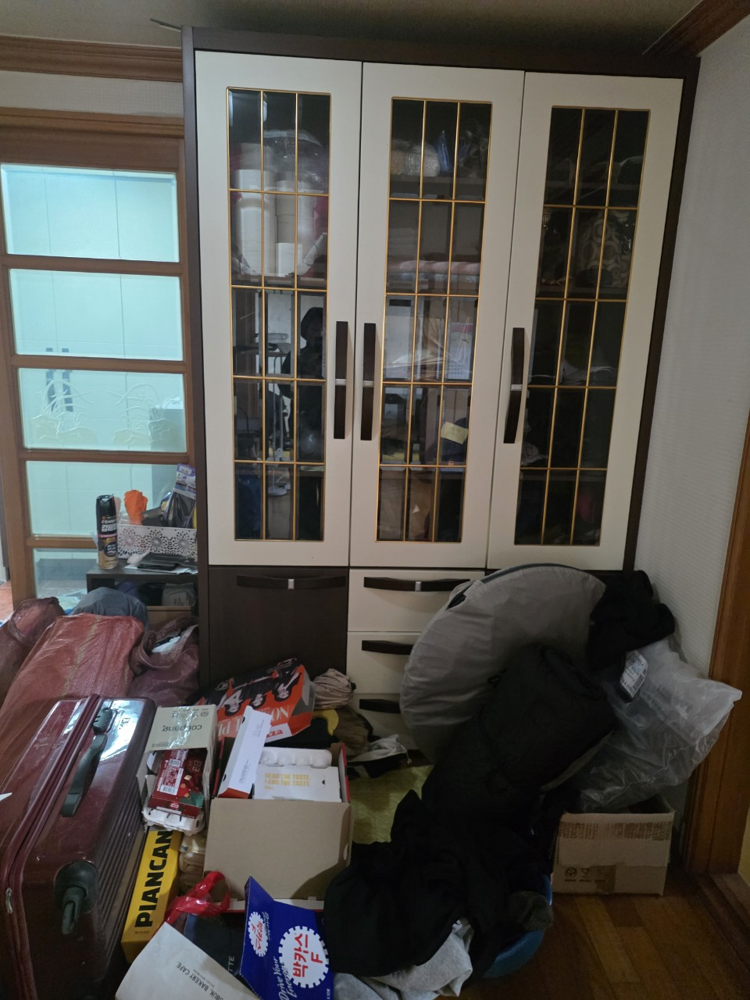
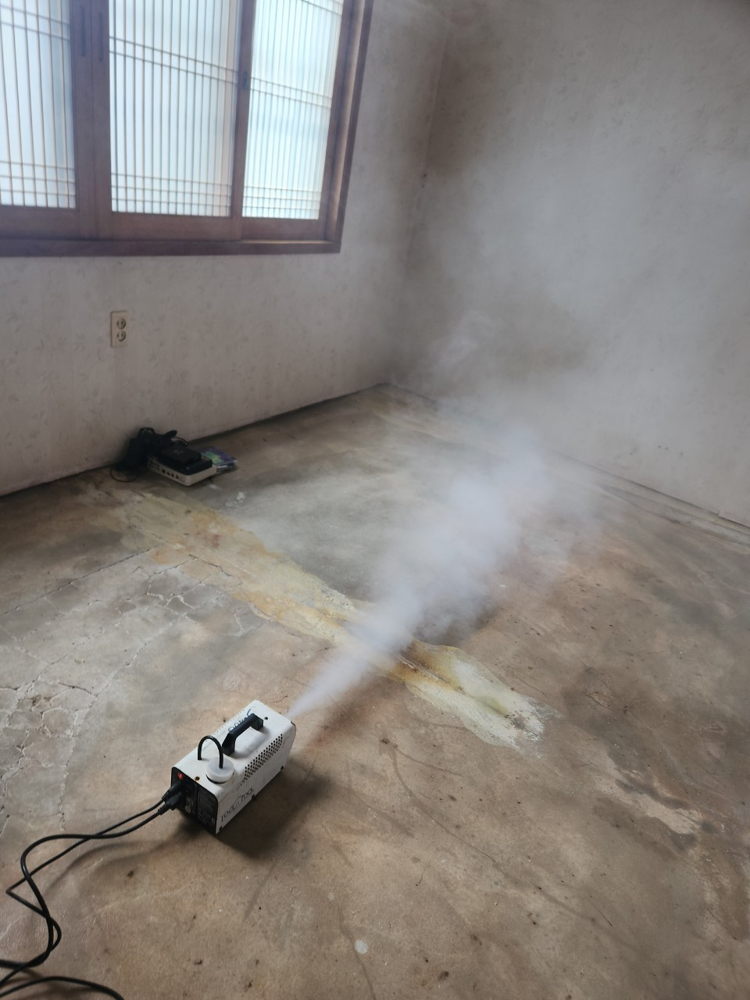
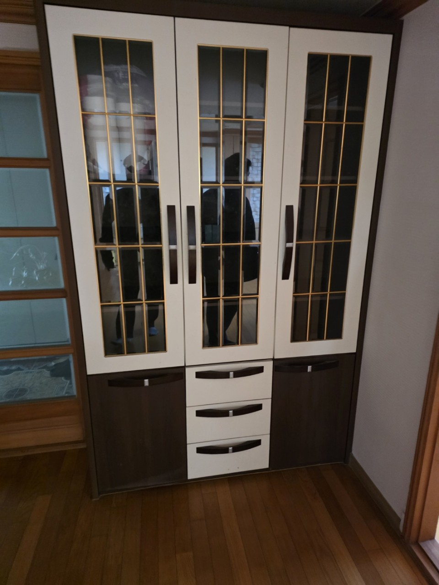

됩니다. 상차 시간만 장 시작 전후로 조정합니다.
수택1동 · 구리전통시장
수택1동 유품정리,
수택1동 유품정리,
시장 골목 현장 상담
수택1동은 구리전통시장과 맞닿은 생활권입니다. 점포 위층 주거, 골목 다세대가 많아 차량을 문 앞에 오래 대기하기 어렵습니다. 유품은 실내에서 먼저 나누고, 상차는 장 시작 전에 붙이는 편이 안전합니다. 구리 올바른정리는 수택1동 유품정리와 시장 인근 쓰레기집청소를 시간표 중심으로 진행합니다.
SERVICE
구리시 수택1동에서 맡기는 작업
수택1동은 점포 폐업 잔짐과 위층 유품이 한 건물에서 나오기도 합니다.
유품정리
시장 위층 주거 유품
부엌과 방에 물건이 이어진 구조가 많습니다. 제사 그릇, 상비약, 서류는 가족이 빨간 봉투로 표시해 주시면 그 봉투는 열지 않습니다. 좁은 계단은 가구를 분해해 내립니다.
쓰레기집청소
수택1동 골목 적치 반출
점포 뒷골목에 적치된 박스와 가구는 보행을 막지 않게 즉시 상차합니다. 장날에는 실내 포장만 하고 차량은 다음날 새벽에 붙입니다.
PRICE
수택1동 비용이 달라지는 지점
수택1동은 골목 운반 횟수가 시장 밖 현장보다 많아질 수 있습니다.
* 부가세 별도 · 시작가이며 현장 확인 후 확정
유품정리
45만원 부터~
위층 주거 유품 45만원부터, 계단 분해 작업이 있으면 인원을 더합니다.
고독사 특수청소
80만원 부터~
창이 작은 골목집 오염은 80만원부터입니다.
쓰레기집·일반폐기물
30만원 부터~
점포+주거 동시 반출이면 품목별로 30만원대에서 조정합니다.
GUIDE
수택1동 유품정리는 왜 장날을 묻나요?
시장 통행이 상차 가능 시간을 결정하기 때문입니다.
구리전통시장 위층에서 유품정리를 할 수 있나요?
가능합니다. 수택1동은 점포와 주거가 한 출입구를 공유하는 건물이 있습니다. 유품정리는 주거 층만 작업하고, 점포 집기는 주인이 허락한 경우에만 함께 내립니다. 계단 폭이 좁아 장롱은 분해가 기본입니다.
수택1동 쓰레기집청소를 오전에 못하는 경우가 있나요?
장날 오전은 하차 차량이 골목을 막습니다. 그때는 실내 분류만 하고 상차를 미룹니다. 반대로 새벽 상차가 가능한 건물은 그 시간이 더 빠르고 민원도 적습니다.
시장 손님 앞에서 물건을 내리면 안 되는 거 아닌가요?
그래서 복도에 쌓지 않습니다. 포장 완료 후 차량이 들어오는 짧은 시간에만 이동합니다. 수택1동 쓰레기집청소는 이 짧은 상차가 핵심입니다.
수택1동 유품 중 시장에서 쓰는 저울·상자도 나오나요?
점포 물건과 가정 유품이 섞여 나옵니다. 점포 집기는 폐업폐기물, 가정은 유품·생활폐기물로 나눠야 처리가 맞습니다. 상담 때 점포 유무를 꼭 알려 주세요.
견적을 위해 찍어야 할 수택1동 사진은?
계단, 현관, 가장 쌓인 방, 골목 입구입니다. 골목 사진이 있으면 본차 진입 여부를 바로 말합니다.
PROCESS
수택1동 작업 순서
수택1동은 장날 여부를 일정 확정 전에 확인합니다.
STEP 01
장날·출입 확인상차 가능 시간을 시장 통행에 맞춰 받습니다.
STEP 02
표시 유품 제외빨간 봉투와 지정 구역은 작업에서 빼 둡니다.
STEP 03
짧은 골목 상차포장이 끝난 뒤 차량을 붙여 보행을 막지 않게 실습니다.



FAQ
수택1동에서 자주 묻는 질문
검색·AI 답변에 쓰일 수 있도록 이 지역 기준으로 짧게 정리했습니다.
일반 반출 30만원부터입니다. 골목 손운반이 길면 인원이 추가됩니다.
출입과 소유가 명확하면 당일 연속이 가능합니다. 전표는 주거/점포로 나눕니다.
주말 통행이 많으면 같은 원칙으로 상차 시간을 옮깁니다.